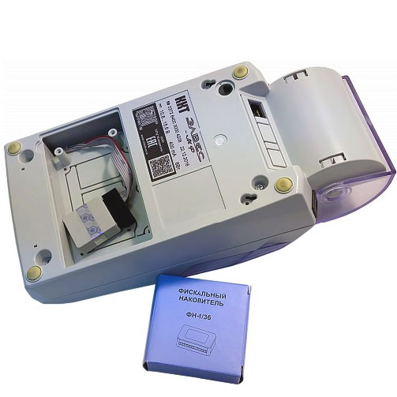
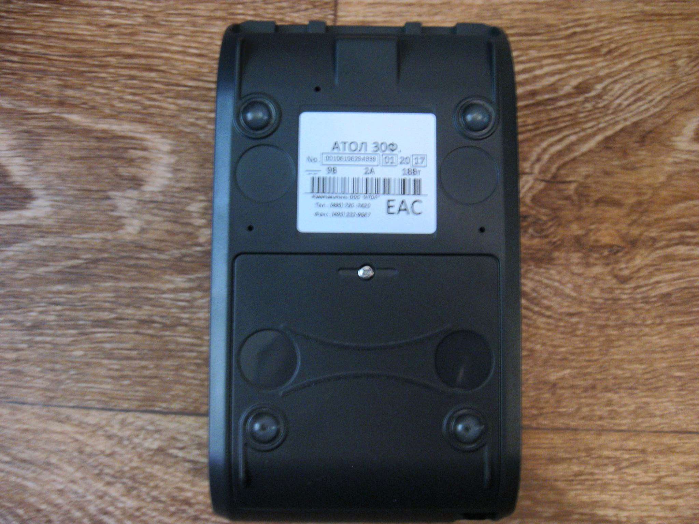

Рассмотрим, что делать после замены фискального накопителя. От владельца ККТ требуется не только активировать новый модуль, но и выполнить перерегистрацию онлайн-кассы в налоговой службе.
Порядок замены фискального накопителя

Фискальный накопитель (ФН) — электронный модуль криптографической защиты фискальной информации для использования в составе онлайн-кассы. Закон о применении ККТ № 54-ФЗ от 22.05.2003 обязывает всех владельцев такой техники проводить замену ФН. Рассмотрим детально, когда нужно оснащать кассовые аппараты новым модулем, каков порядок замены фискального накопителя.
Причины и сроки замены ФН
Фискальный накопитель в современных кассовых устройствах выступает единственным сменным элементом. Потребность в установке нового ФН возникает по различным причинам.
Истечение срока действия по закону. Наиболее частая причина замены электронного модуля — истечение периода действия. Он ограничен на законодательном уровне. Основная модификация устройства предназначена для эксплуатации на протяжении 13 месяцев. Есть также модели, которые можно использовать в течение 3 лет. Применять ФН с увеличенным периодом действия обязаны: владельцы бизнеса, работающие по специальным налоговым режимам (УСН, ЕНВД, ПСН, ЕСХН, исключение составляют предприятия, занимающиеся реализацией подакцизной продукции) и владельцы бизнеса по оказанию услуг.
Если хозяйствующие субъекты входят в одну из перечисленных категорий, но ведут сезонный бизнес, то у них есть право выбирать, какой накопитель установить — на 13, 15 или 36 месяцев. Такое же право есть у владельцев бизнеса, совмещающих налоговый режим с ОСН или использующих ККТ автономно (например, бизнес ведется в отдаленной местности, где нет постоянного интернет-соединения).
Модификации со сроком эксплуатации на 13 месяцев должны использовать организации, торгующие подакцизной продукцией. Остальные владельцы бизнеса могут самостоятельно выбирать подходящий по сроку действия ключ фискального признака.
Соответственно, по завершении срока замены ФН владелец кассы должен выполнить установку нового модуля. Важно учесть, что период отсчитывается не с даты регистрации ККТ, а с момента проведения фискализации накопителя. Стоит отметить в календаре, когда выполнялась процедура. Если точных данных нет, можно посмотреть информацию в настройках кассовой техники или в ЛК на портале ОФД.
Впрочем, в прошивке ККТ предусмотрена функция, оповещающая о скором наступлении срока замены фискального накопителя. Уведомление появляется в последний месяц службы модуля. Но важно понимать, что не всегда нужная модель ФН может быть в наличии у поставщика. По этой причине лучше самостоятельно отслеживать период использования, чтобы успеть приобрести устройство и не останавливать бизнес-деятельность.
Заполнение встроенной памяти. Стандартный модуль, рассчитанный на эксплуатацию в течение 13 месяцев, оснащен встроенной памятью для записи около 180 000 финансовых операций, что составляет приблизительно 450 квитанций в сутки. Память не может быть расширена, поэтому при ее заполнении возникает необходимость в установке нового устройства.
В большинстве моделей ККМ предусмотрена функция контроля за заполняемостью памяти. Дополнительно выводится уведомление, когда ресурс накопителя практически исчерпан и находится на уровне 1-2 % свободного места. Здесь важно поторопиться с приобретением нового устройства.
Смена собственника ККТ. Когда кассовая техника передается в пользование другому владельцу, проводится замена ФН, поскольку при регистрации ККТ в накопитель записываются сведения текущего пользователя. Изменить информацию нельзя. Поэтому необходимо новое устройство, в памяти которого будут внесены сведения о новом собственнике ККТ.
Неверно указаны реквизиты ККТ. При фискализации накопителя пользователь указывает регистрационный номер (РН) кассового оборудования, и здесь важно проявлять внимательность. Изменить введенные данные после их сохранения нельзя. Ошибка оборачивается необходимостью покупки нового СКЗИ и проведения повторной фискализации.
Поломка фискального накопителя и отсутствие возможности его восстановления. Неисправность фискальных накопителей — нечастое явление, поскольку они представляют собой надежные и защищенные устройства. Поломка может случиться при грубой эксплуатации или вследствие воздействия агрессивных сред. Не всегда удается выполнить ремонт устройства и восстановить его работоспособность, что приводит к необходимости замены. Если применять ККТ с неисправным ФН, то для организации это обернется штрафными санкциями.
Порядок замены ФН
Провести замену фискального модуля кассы можно силами специалистов сервис-центра. Вариант особенно актуален в тех случаях, когда на ККТ еще действует гарантия. Можно провести процедуру и самостоятельно, соблюдая порядок замены ФН.
Закрытие архива ФН
Порядок замены фискального накопителя предполагает закрытие его архива. Вместе с этим произойдет автоматическое создание отчета о закрытии самого модуля. Но сначала потребуется завершить текущую смену. Далее дождитесь, когда все данные будут переданы в ОФД, убедившись в наличии подключения кассы к интернету. После чего проверьте поле «Количество непереданных ФД» — здесь не должно отображаться никаких записей. На следующем этапе откройте программу для регистрации ККМ и выполните следующие действия:
- 1. Нажмите «Закрыть архив».
- 2. Удостоверьтесь, что на ККМ установлено правильное время. Если оно отличается от текущего, выберите опцию «Синхронизировать с компьютером». После чего щелкните по кнопке «Далее».
- 3. Подтвердите операцию о закрытии архива, активировав опцию «Выполнить».
- 4. Автоматически будет создан документ с фискальным признаком. Важно дождаться его поступления на сервер ОФД.
Обратите внимание: если в ОФД будут отправлены не все квитанции, то в процессе закрытия архива выскочит ошибка и операция будет отменена. Аналогичная ситуация возникает в случае, когда от сервера ОФД не поступает ответа.
Физическая замена фискального накопителя
Физическая замена электронного модуля имеет свои нюансы в зависимости от модели ККТ. Общий алгоритм действий следующий:
- 1. Отключите онлайн-кассу от источника питания.
- 2. Откройте крышку принтера и выньте чековую ленту.
- 3. Откройте отсек на задней стенке принтера, аккуратно отключите и вытащите накопитель и установите на его место новое устройство.
- 4. Закройте отсек, установите чековую ленту и закройте принтер.
- 5. Теперь останется подключить кассовую технику к сети и дождаться ее загрузки.
Важно после проведения замены не выбрасывать фискальный накопитель. Владелец контрольно-кассовой техники обязан обеспечить его сохранность в течение 5 лет. Данное требование предусмотрено пунктом 2 статьи 5 Закона № 54-ФЗ.
Что делать после замены фискального накопителя
Активация нового ФН
Вновь запустите программу для регистрации, в меню выберите пункт «Перерегистрация». Выполните синхронизацию времени с компьютером и щелкните по кнопке «Далее». Распечатается документ о внесении даты.
На следующем этапе укажите причину перерегистрации ККМ. Из представленного списка выберите «Замена ФН» и кликните по кнопке «Далее». Проверьте правильность сведений о ККМ и при необходимости внесите коррективы.
Нажмите «Далее» для сохранения изменений и дождитесь, когда онлайн-касса сформирует и напечатает отчет о фискализации. Одновременно с этим в окне программы должно появиться уведомление об успешном завершении операции.
Перерегистрация онлайн-кассы в ФНС
Регистрация замены ФН в налоговой инспекции возможна непосредственно при личном визите или удаленно в режиме онлайн. Второй вариант более удобен и не затратен по времени. Все, что понадобится для перерегистрации онлайн, — наличие квалифицированной электронной подписи. Все необходимые действия проводятся на сайте ИФНС. Инструкция следующая:
- 1. Перейдите на портал налоговой инспекции и авторизуйтесь в ЛК.
- 2. Выберите ОПФ и кликните «Выполнить вход с ключом ЭП».
- 3. В открывшемся окне активируйте опцию «Выполнить проверку на соответствие условиям».
- 4. Откроется форма, где подтвердите запрос на начало проверки. В процессе потребуется выбрать сертификат предприятия.
- 5. По завершении проверки кликните «Войти в ЛК».
- 6. В ЛК выберите раздел «Кассы». Найдите в представленном перечне ККТ, для которой производилась переустановка ФН. Кликните по РН кассовой техники и выберите команду «Перерегистрировать ККМ».
- 7. Откроется окно, в нем потребуется выбрать основание для перерегистрации кассового оборудования, указать ОФД.
- 8. На завершающем этапе щелкните по опции «Подписать и отправить». Заверьте действие ЭЦП и дождитесь, когда ФНС рассмотрит запрос.
После того как сотрудники налоговой службы одобрят заявку, в личном кабинете, напротив РН ККМ, появится статус «Касса перерегистрирована».
Изменение сведений в ОФД
В большинстве случаев информация о перерегистрации ККМ автоматически поступает ОФД, где одновременно фиксируется новый номер ключа фискального признака. Если по каким-то причинам не произошло изменений сведений у оператора фискальных данных, то действуйте следующим образом:
- 1. Выполните вход в ЛК на портале ОФД.
- 2. В ЛК выберите вкладку «Кассы».
- 3. Найдите в перечне нужную ККТ и кликните по иконке файла возле ее РН. Начнется автоматическое скачивание заявления.
- 4. Заполните загруженную форму требуемыми данными и отправьте ее по электронной почте в ОФД. Дождитесь изменения сведений на сайте оператора о перерегистрации кассы.
После выполнения всех перечисленных шагов можете продолжать пользоваться онлайн-кассой в обычном режиме.
Бухгалтерский учет фискального накопителя
Бухгалтерский учет при замене фискального накопителя имеет ряд особенностей. При модернизации онлайн-кассы проводки формируют с участием счета 10. В зависимости от варианта учета ККМ, затраты на приобретение и установку накопителя отражаются на счете 08, что приводит к увеличению стоимости основных средств, либо на счетах накопления затрат.
Некоторые учитывают расходы на модернизацию кассы на субсчете 10-5 «Запасные части», что неправильно. На нем отражаются затраты на покупку и обслуживание запчастей, предназначенных для ремонта или обслуживания машин, транспортных средств и производственного оборудования.

Меня здесь нет